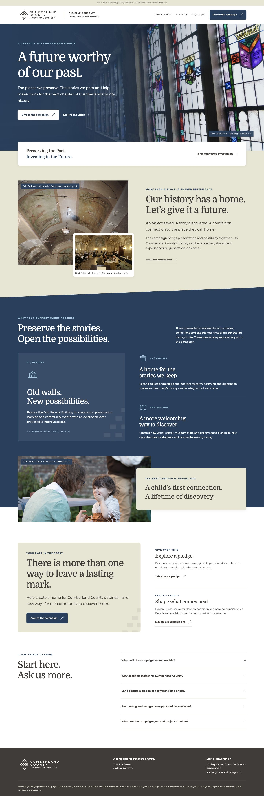
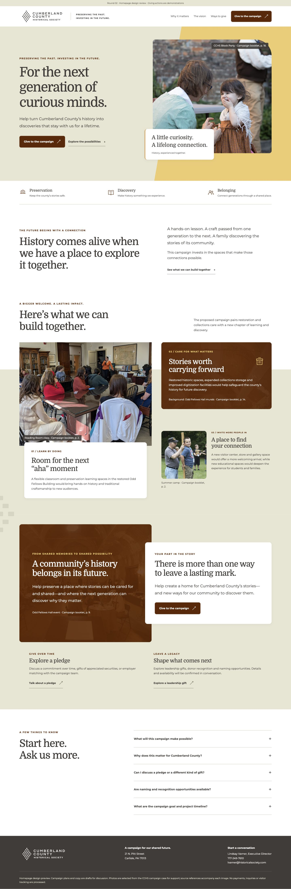
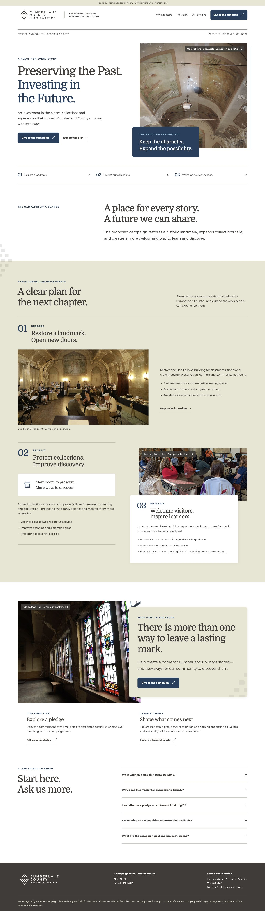

The Living Legacy
Immersive historic photography, Ocean gradients, overlapping editorial panels and a shallow diamond-derived transition.
Homepage design review. Open each concept at desktop and phone widths. Actions are demonstrations.
Compare visual cohesion, image treatment, section transitions and overall composition. Which direction feels most polished, and which details should we carry forward?

Immersive historic photography, Ocean gradients, overlapping editorial panels and a shallow diamond-derived transition.

Warm human photography, layered Marigold surfaces and an asymmetric connected project composition.

An editorial campaign composition with a photographic opening, deliberate rules, offset images and alternating project scales.
Answers stay in this browser page and are not submitted or saved. Download or copy the text and send it through your usual review channel.